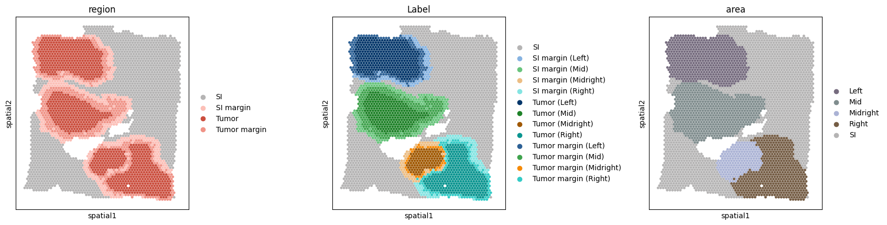
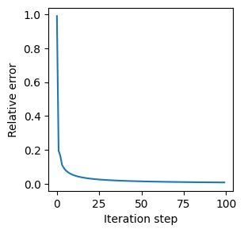
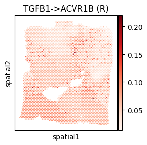
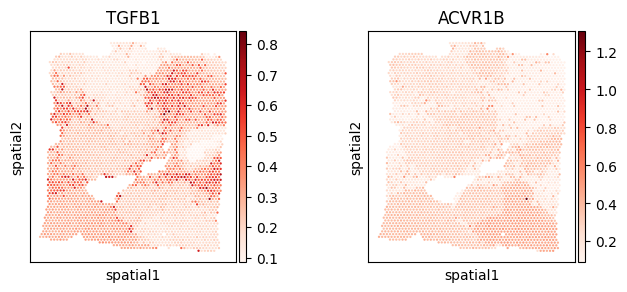

HumanBreastCancer (Visium) Analysis Tutorial
Data availability: All processed spatial transcriptomics datasets are publicly available on Zenodo: https://doi.org/10.5281/zenodo.17522268
[1]:
from models.SCILD_main import *
from models.help_func import create_LRDatabase_D
import scanpy as sc
import squidpy as sq
import warnings
warnings.filterwarnings('ignore')
np.random.seed(42)
Import data
[2]:
adata = sc.read_h5ad('./data/HumanBreastCancerVisium_adata_Sprod.h5ad') # had been pre-processed
adata
[2]:
AnnData object with n_obs × n_vars = 3798 × 22240
obs: 'in_tissue', 'array_row', 'array_col', 'X', 'Y', 'Label', 'region', 'area', 'PsTime_raw', 'raw_group', 'PsTime_de', 'de_group', 'n_genes'
var: 'gene_ids', 'feature_types', 'genome', 'n_cells'
uns: 'Label_colors', 'area_colors', 'log1p', 'region_colors', 'spatial'
obsm: 'spatial'
[3]:
# ==== visualize dataset =====
adata.uns['Label_colors'] = np.array(['#B5B4B4',
'#86B3E1', '#68C47C', '#ECBD83', '#84E4E2',
'#02366A', '#1E8228', '#A05800', '#0A9590',
'#2C6095', '#3FA34D', '#F58A07', '#33CBC6',
])
adata.uns['region_colors'] = np.array(['#B5B4B4', '#FCBFB7', '#CB4E3E', '#F09387'])
adata.uns['area_colors'] = np.array(['#766C7F', '#808D8E', '#ABB3D5', '#755D45', '#B5B4B4'])
sq.pl.spatial_scatter(adata, size=1.5, color=['region', 'Label', 'area'], img=False)

Create L-R database
[4]:
LRDatabase_D = create_LRDatabase_D(
adata,
min_cell_pct=0.1,
database='CellChat',
species='human',
kept_pathway=['EGF', 'TGFb', 'FGF', 'VEGF', 'IGF', 'INSULIN', 'IL6', 'TNF', 'CXCL', 'RANKL', 'PRL']
)
[5]:
LRDatabase_D.shape
[5]:
(45, 36)
Run SCILD
[6]:
CCCProb = SCILD(adata=adata,
LRDatabase_D=LRDatabase_D,
platform='Visium',
alpha_q=0.1,
alpha_f=0.1,
alpha_g=0.1,
niter_max=100,
eps=1e-4,
verbose=True,
plot_error=True
)
CCCProb.preparing()
nl = CCCProb.nl
nr = CCCProb.nr
ns = CCCProb.ns
print('The number of ligand is: ' + str(nl))
print('The number of receptor is: ' + str(nr))
print('The number of spot is: ' + str(ns))
*************Preparing*************
neighbor_k: 5
The number of ligand is: 45
The number of receptor is: 36
The number of spot is: 3798
[7]:
mu0 = np.random.random(nl * ns).reshape(-1, 1)
v0 = np.random.random(nr * ns).reshape(-1, 1)
CCCProb.solving_optimization(mu0, v0)
*************Solving*************
The relative error is: 0.055004805573866875
The relative error is: 0.03181571478259097
The relative error is: 0.02306376360549727
The relative error is: 0.018280310802080427
The relative error is: 0.015215637746448143
The relative error is: 0.013063308800788933
The relative error is: 0.011459667334660731
The relative error is: 0.010214511281884855
The relative error is: 0.009217704546036824
The relative error is: 0.00840122171043044
The final relative error is: 0.00840122171043044
The total iteration step is: 100

[8]:
CCCProb.adata
[8]:
AnnData object with n_obs × n_vars = 3798 × 22240
obs: 'in_tissue', 'array_row', 'array_col', 'X', 'Y', 'Label', 'region', 'area', 'PsTime_raw', 'raw_group', 'PsTime_de', 'de_group', 'n_genes'
var: 'gene_ids', 'feature_types', 'genome', 'n_cells'
uns: 'Label_colors', 'area_colors', 'log1p', 'region_colors', 'spatial'
obsm: 'spatial', 'sum-sender-Q', 'sum-sender-P', 'sum-receiver'
Extract LR CCC
[9]:
CCCProb.query_all_LR()
[10]:
CCCProb.tensor_P.shape
[10]:
(3798, 3798, 45, 36)
[11]:
res_dict = tensor_to_method_result(CCCProb.tensor_P,
list(CCCProb.LRDatabase_D.index),
list(CCCProb.LRDatabase_D.columns))
len(res_dict)
[11]:
1620
[12]:
res_dict = filter_method_result_by_LR_database(res_dict, CCCProb.LRDatabase_D)
len(res_dict)
[12]:
128
[13]:
import pickle
with open("./results/HumanBreastCancerVisium_SCILD_result.pkl", "wb") as f:
pickle.dump(res_dict, f)
Visualization
select L-Rs to show (spatial)
[14]:
CCC_df = CCCProb.compute_TSSR()
CCC_adata = sc.AnnData(CCC_df)
CCC_adata.obsm['spatial'] = adata.obsm['spatial']
CCC_adata
[14]:
AnnData object with n_obs × n_vars = 3798 × 256
obsm: 'spatial'
[15]:
LR_df_spatial = compute_spatial_autocorrelation(CCC_adata)
LR_df_spatial.sort_values('moran_I', ascending=False).head()
[15]:
| moran_I | p_value | |
|---|---|---|
| IL6->IL6ST (R) | 0.956677 | 0.0 |
| CXCL2->ACKR1 (R) | 0.933459 | 0.0 |
| TGFB2->ACVR1B (R) | 0.922643 | 0.0 |
| FGF5->FGFR1 (R) | 0.910162 | 0.0 |
| AREG->ERBB2 (R) | 0.909412 | 0.0 |
[16]:
CCCProb.adata.obs[CCC_df.columns] = CCC_df
CCCProb.adata.obs.head()
[16]:
| in_tissue | array_row | array_col | X | Y | Label | region | area | PsTime_raw | raw_group | ... | VEGFB->FLT1 (S) | VEGFB->FLT1 (R) | VEGFC->FLT4 (S) | VEGFC->FLT4 (R) | VEGFC->KDR (S) | VEGFC->KDR (R) | VEGFD->FLT4 (S) | VEGFD->FLT4 (R) | VEGFD->KDR (S) | VEGFD->KDR (R) | |
|---|---|---|---|---|---|---|---|---|---|---|---|---|---|---|---|---|---|---|---|---|---|
| AAACAAGTATCTCCCA-1 | 1 | 50 | 102 | 15937 | 17428 | SI margin (Right) | SI margin | Right | NaN | NaN | ... | 0.036708 | 0.034142 | 0.012474 | 0.009599 | 0.001299 | 0.001449 | 0.000222 | 0.000237 | 0.000023 | 0.000037 |
| AAACACCAATAACTGC-1 | 1 | 59 | 19 | 18054 | 6092 | SI | SI | SI | NaN | NaN | ... | 0.039064 | 0.040706 | 0.016738 | 0.011756 | 0.002583 | 0.001790 | 0.000079 | 0.000072 | 0.000012 | 0.000011 |
| AAACAGAGCGACTCCT-1 | 1 | 14 | 94 | 7383 | 16351 | SI | SI | SI | NaN | NaN | ... | 0.045173 | 0.045781 | 0.027412 | 0.025983 | 0.008729 | 0.008464 | 0.002262 | 0.001777 | 0.000720 | 0.000582 |
| AAACAGGGTCTATATT-1 | 1 | 47 | 13 | 15202 | 5278 | SI | SI | SI | NaN | NaN | ... | 0.045843 | 0.066814 | 0.010720 | 0.012081 | 0.002097 | 0.002115 | 0.000118 | 0.000117 | 0.000023 | 0.000020 |
| AAACAGTGTTCCTGGG-1 | 1 | 73 | 43 | 21386 | 9363 | SI | SI | SI | NaN | NaN | ... | 0.027963 | 0.042013 | 0.016353 | 0.011073 | 0.002744 | 0.002405 | 0.000454 | 0.000389 | 0.000076 | 0.000086 |
5 rows × 269 columns
[20]:
plt.rcParams['figure.figsize'] = [3, 3]
sc.pl.spatial(CCCProb.adata, spot_size=200, color="TGFB1->ACVR1B (R)", cmap='Reds', img_key=None)

[21]:
plt.rcParams['figure.figsize'] = [3, 3]
sc.pl.spatial(CCCProb.adata, spot_size=200, color=["TGFB1", "ACVR1B"], cmap='Reds', img_key=None)

Cell-group level results
[19]:
from models.help_func import aggregate_to_group
cell_to_group = adata.obs['Label'].to_dict()
group_result = {}
for lr_key, matrix in res_dict.items():
group_matrix = aggregate_to_group(matrix, cell_to_group)
group_result[lr_key] = group_matrix.values